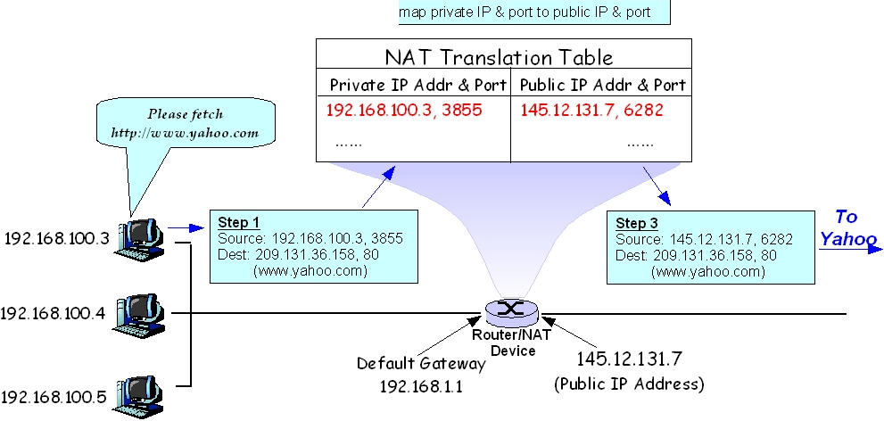
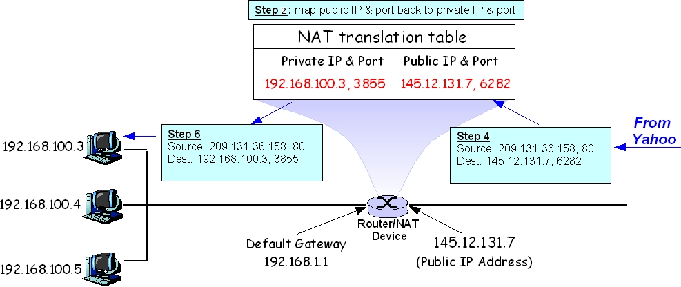

NAT (Network Address Translation)
NAT permits an entity to use internal addresses that are not accessible from the public Internet. The process usually runs on a router and translates between theinternal and external addresses. NAT is analogous to a hotel that has one publicaddress, but keeps the identities of its guests private except when the guest grantspermission for connection to the outside world. The IETF in RFC 1918 designatedcertain blocks of addresses for use behind NAT. These blocks are: 10.0.0.0 through10.255.255.255, 172.16.0.0 through 172.31.255.255, and 192.168.0.0 through 192.168.255.255. Users cannot register these address blocks and they are frequentlyused for private networking plans. Not only does NAT conserve IP addresses, italso improves security because outsiders cannot reach an internal address directly. Networks that will never connect to the Internet are free to use any IP addresses they like, but any organization doing so should be aware that a future Internet connection will likely require changing existing addresses.
Il vostro ISP assegna un uncico indirizzo IP alla vostra connessione internet (al router). Tutti i computers su internet devono possedere un unico indirizzo IP. Ma voi potete avere diversi computers in casa ed un unico indirizzo IP. Come funziona il meccanismo?
Nella vostra rete locale, i computers hanno indirizzi IP del tipo 192.168.1.100 e possono essere usati solamente all'interno di essa. Il router assegna automaticamente questi indirizzi a ciascun computer connesso via DHCP. Questi indirizzi permettono ai computers della vostra rete locale di communicare con il router e tra loro.
Al router è assegnato l'indirizzo dall'ISP che rende possibile le comunicazioni con gli altri computers su Internet.
I Computers della vostra rete locale possiedono "non-routable private IP addresses", ciò significa che se provassero ad inviare dei pacchetti direttamente su the internet questi sarebbero automaticamente scartati. Ma il vostro router ha un "routable address" che gli permette di comunicare su Internet. Il router di casa a cui tutti i dispositivi sono collegati ha una funzione chiamata Network Address Translation, or NAT, in grado di trasformare un indirizzo IP privato in uno pubblico e viceversa. Questo permette a tutti i dispositivi collegati alla vostra rete locale di apparire su Internet come un singolo dispositivo a cui è assegnato un unico indirizzo IP. The term network address translation describes the process of translating private nad public IP addresses.
The basic idea behind NAT is to assign a single IP address to a NAT device. We'll call this the public IP address. Within the local network behind the NAT device, every computing device gets assigned a private IP address as illustrated below:
Keep in mind that private IP addresses are valid only within that local area network. It is not recognized on the public Internet. For packets that originate from a private IP address and port, it must be converted to a unique public IP address and port before it can be sent to the Internet. The mapping from private IP address & port to a public IP address & port is typically done through a translation table inside the NAT device. An example is shown in figure 2:
When, for instance, a LAN-connected computer wants to retrive a webpage, that computer might sens a request from it IP address (192,168.100.3) using port 3855. The NAT server receives that connection and creates a request over the internet using the WAN IP address and, typically, a different port. So the NAT gateway's request might originate from a public address such as 145.12.131.7 with a port of 12087.
The web server receiving the request doesn't know about the original computer behind the NAT. Rather, the web server responds by sending HTML for the requested webpage to port 12087 on IP 145.12.131.7. The NAT server retains a list of associations between public and private ports and addresses, and hands the web connection over to the machine that requested it.